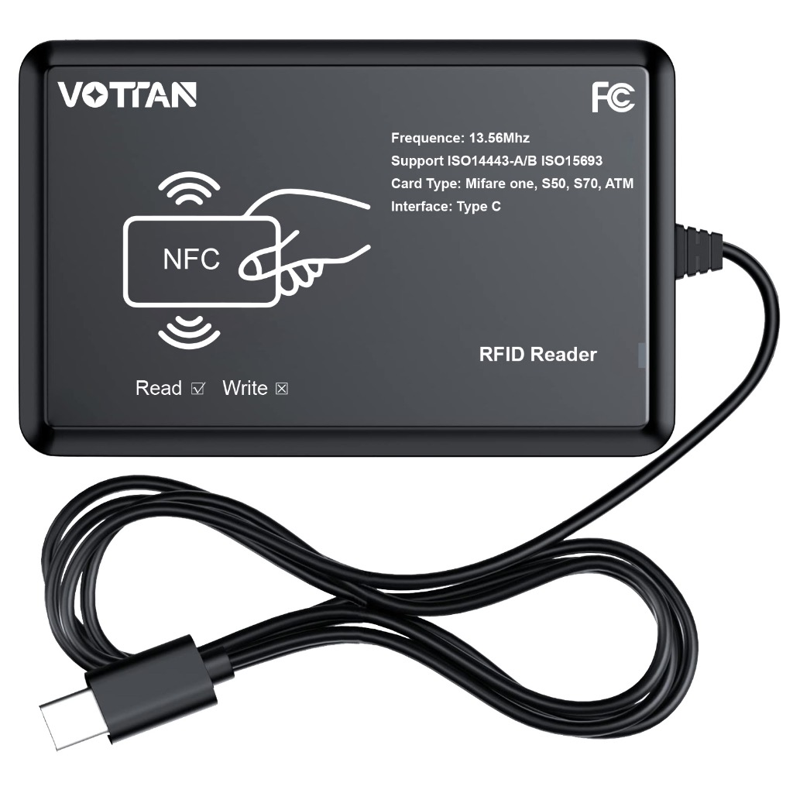
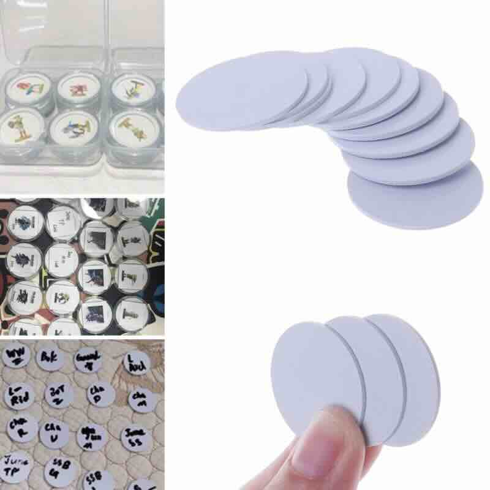
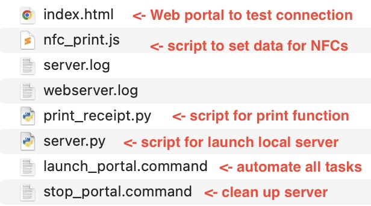
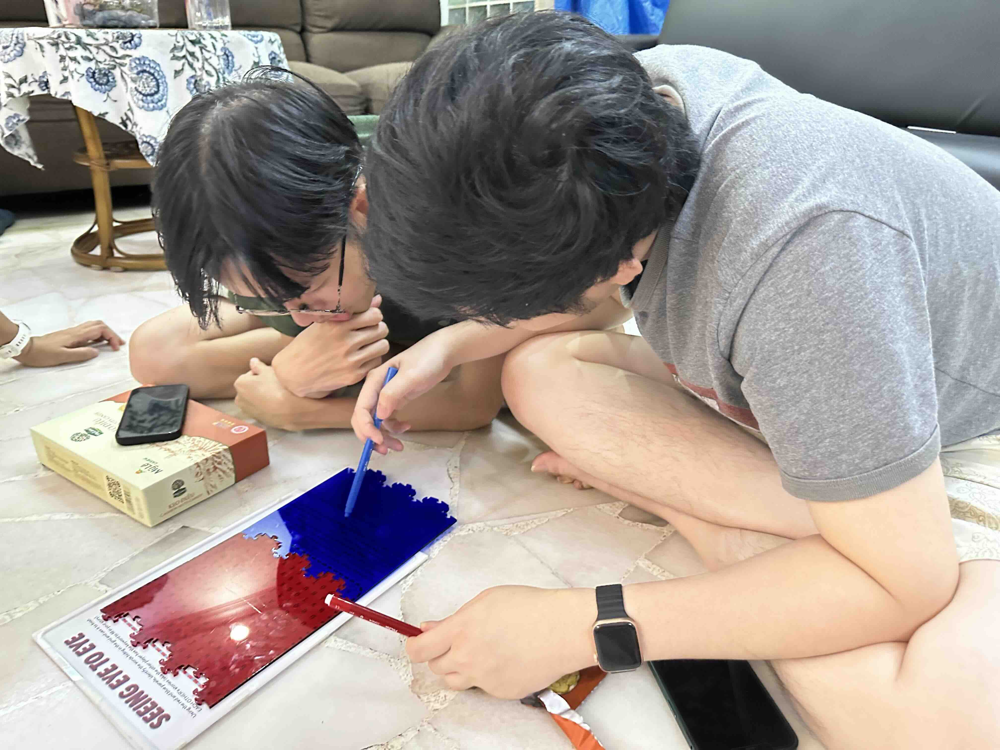
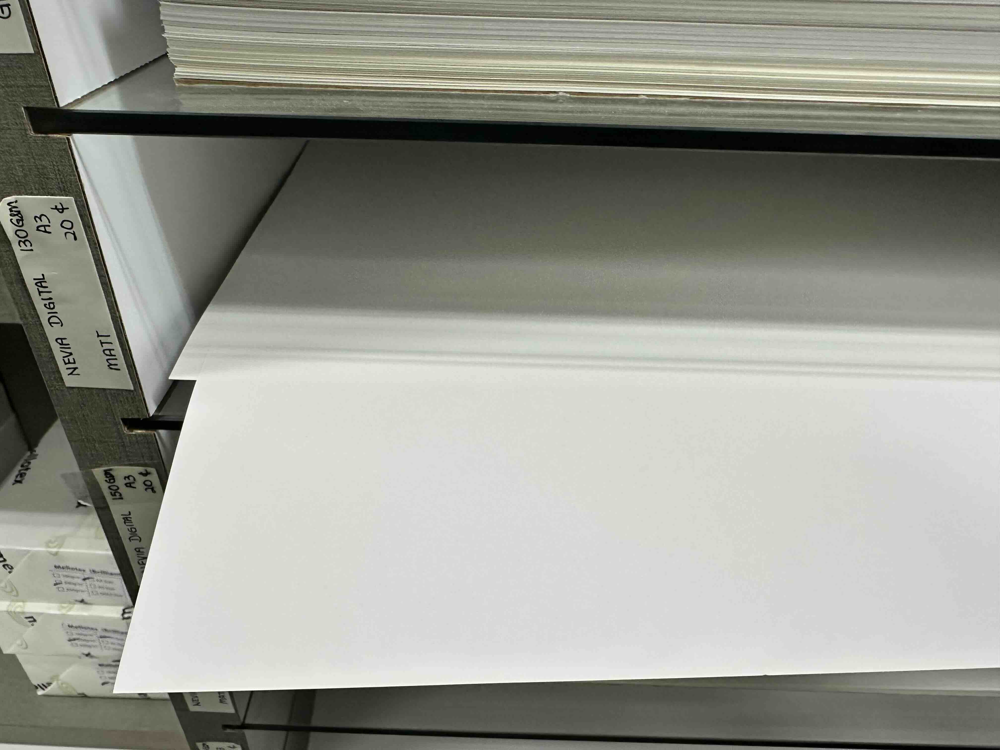

Activities
- Implement printer interaction mechanic
- Organise first round of user testing
- Develop next iteration of table display
Reflection
As I was brainstorming for different mechanics for how the user can interact with the printer, one of my favourite (and most doable) idea is the tapping mechanic (like paywave), where the user can tap a reader that triggers the printer to print. So, I purchased an RFID reader that can read NFC cards, and I also acquire some NFC chips to test this mechanic.

I bought some round chips as these are quite small and easy to embed into designs for the cards that I can implement later on.

Once I acquired both these elements, I tested them with the printer. The reader is very straightforward, as it worked immediately upon plugging into the computer, however, I still needed to work out a way for the printer and the reader to communicate, which is through the computer (as they cannot communicate directly). For more details, please see my prototype development page.

But the simplest explanation is that the computer will act as the connection that allows the reader to send the NFC signal to trigger the printer to print. And in order to do this, I have to add a script to launch a server on the computer (which is the communication channel), and a web portal for me to manually test this connection. This is also the set up that I will use for the WIP display and even later installation.

This week I also organised the first round of user testing for all working prototypes: Greener Grass board game, While We Were Young card game, and Seeing Eye-to-Eye Puzzle. Please read the full report of each user test in the prototype development page.

Regarding the table display, I received feedback that the paper quality I am using for my display is not up to standard, and I should consider using different paper textures. Hence this week, I went shopping for more paper to print my prototypes and display designs.

Literature This Week
Tasks
- Organise next round of user testing
- Finalise table display
- Iterate on prototypes based on first round of user test feedback